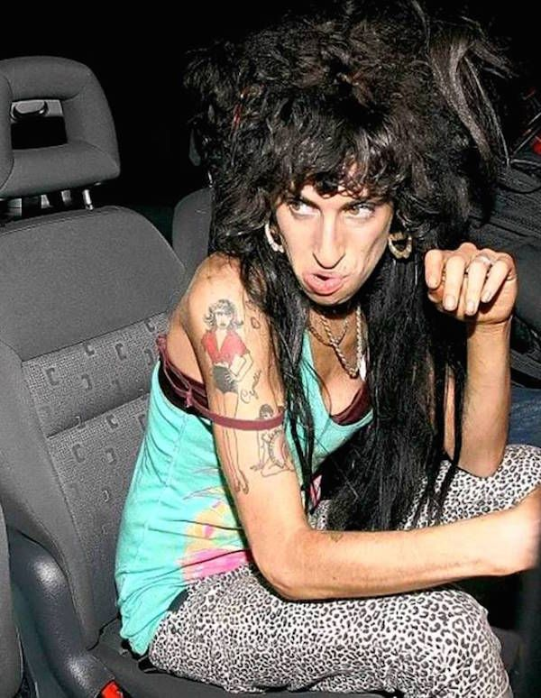
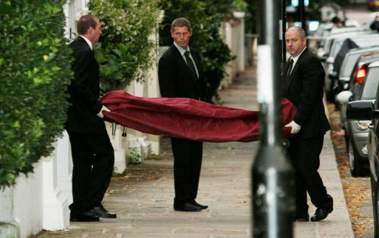

Amy Jade Winehouse foi uma cantora, compositora e multi-instrumentista britânica, conhecida por seu poderoso e profundo contralto vocal e por sua mistura eclética de gêneros musicais, incluindo soul, jazz, R&B e ritmos caribenhos, como o ska. Amy nasceu dia 14 de setembro de 1983, no UK Amy ao longo da vida se demonstrou muito designada para a música parecia que lá era seu lugar, ao longo de sua tragetória artistica em 2008 Amy ja tinha ganhado 6 Grammys de outros que vira ganhar em sua vida. (albúm do ano por "Back to Black" canção do ano pela faixa com mesmo nome do álbum artista revelação, gravação do ano, best pop vocal albúm e melhor performance vocal pop feminina) Porém um futuro brilhante na música e uma tragetória linda foi tomando um rumo fora dos eixos de Amy Winehouse.
Amy ao longo dos anos virou dependente química, começou bebendo destilados, e foi aumentando indo para cocaína, heroína, etc.. em 2007, Amy conheceu Blake Fielder, que vira a ser seu futuro conjujê. cujo era para dar apoio a Amy à largar o mundo das drogas, simplesmente foi um incentivo maior para Amy virar cada vez mais dependente. se estavam juntos ele usava com ela, se estavam separados, ela usava para se sentir menos pior com toda a situação. A partir disso, Amy que era a queridinha dos paparazzis e dos jornalistas, simplesmente se tornou a "drogada, louca psicótica"
Dia 23 de Julho de 2011, Amy oi declarada morta ainda em casa, em Londres. Um laudo sobre o caso concluiu que a cantora teve uma “morte acidental” devido ao consumo excessivo de álcool. Depois de três semanas de abstinência, ela foi encontrada com 416 mg de álcool por 100 ml de sangue. Uma carreira brilhante interrompida simplesmente por excesso de bebida álcoolica, uma das melhores e maiores vozes que passaram pelo planeta que hoje fica guardada na nossa memória e nos nossos fones.
